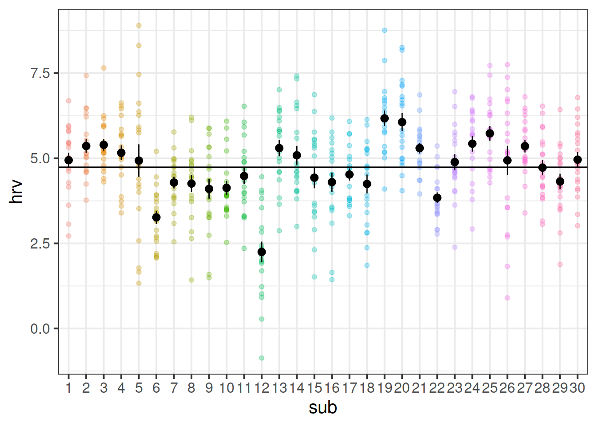
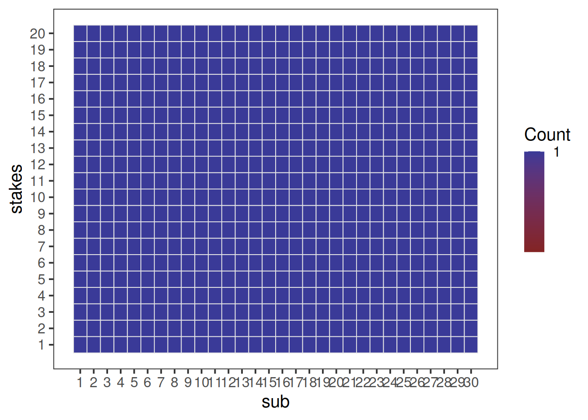

Regression Refresh and Clustered Data
Preliminaries
- Open Rstudio, and create a new project for this course!!
- Create a new RMarkdown document or R script (whichever you like) for this week.
New Packages!
These are the main packages we’re going to use in this block. It might make sense to install them now if you do not have them already (note, the rstudio.ppls.ed.ac.uk server already has lme4 and tidyverse installed for you).
- tidyverse : for organising data
- ICC : for quickly calculating intraclass correlation coefficient
- lme4 : for fitting generalised linear mixed effects models
- lmeresampler : for bootstrapping!
- effects : for tabulating and graphing effects in linear models
- broom.mixed : tidying methods for mixed models
- sjPlot : for plotting models
- DHARMa : for simulating residuals to assess assumptions
- hlmDiag : for examining case diagnostics at multiple levels
](images/intro/reading.png)
Let’s suppose we have data on various types of toys, from Playmobil (pictured above) to Powerrangers, to farm animals. You can find a dataset at https://uoepsy.github.io/data/toyexample.csv, and read it into your R environment using the code below:
toys_read <- read_csv("https://uoepsy.github.io/data/toyexample.csv")
| variable | description |
|---|---|
| toy_type | Type of Toy |
| toy | Character |
| hrs_week | Hours of practice per week |
| age | Age (in years) |
| R_AGE | Reading Age |
Linear model refresh
Recall that in the DAPR2 course last year we learned all about the linear regression model, which took the form:
\[ \begin{align}\\ & \text{for observation }i \\ & \color{red}{Y_i} = \color{blue}{\beta_0 \cdot{} 1 + \beta_1 \cdot{} X_{1i} \ + \ ... \ + \ \beta_p \cdot{} X_{pi}} + \varepsilon_i \\ \end{align} \]
And if we wanted to write this more simply, we can express \(X_1\) to \(X_p\) as an \(n \times p\) matrix (samplesize \(\times\) parameters), and \(\beta_0\) to \(\beta_p\) as a vector of coefficients:
\[ \mathbf{y} = \boldsymbol{X\beta} + \boldsymbol{\varepsilon} \quad \\ \text{where} \quad \varepsilon \sim N(0, \sigma) \text{ independently} \]
Read in the toy data from https://uoepsy.github.io/data/toyexample.csv and plot the bivariate relationship between Reading Age and Hrs per Week practice, and then fit the simple linear model: \[ \text{Reading Age}_i = \beta_0 + \beta_1 \cdot \text{Hours per week practice}_i + \varepsilon_i \]

Think about the assumptions we make about our model: \[ \text{where} \quad \varepsilon_i \sim N(0, \sigma) \text{ independently} \] Have we satisfied this assumption (specifically, the assumption of independence of errors)?
Try running the code below.
ggplot(data = toys_read, aes(x=hrs_week, y=R_AGE))+
geom_point()+
geom_smooth(method="lm",se=FALSE)Then try editing the code to include an aesthetic mapping from the type of toy to the color in the plot.
How do your thoughts about the relationship between Reading Age and Practice change?


Complete Pooling
We can consider the simple regression model (lm(R_AGE ~ hrs_week, data = toys_read)) to “pool” the information from all observations together. In this ‘Complete Pooling’ approach, we simply ignore the natural clustering of the toys, as if we were unaware of it. The problem is that this assumes the same regression line for all toy types, which might not be that appropriate:

Figure 2: Complete pooling can lead to bad fit for certain groups
No Pooling
There are various ways we could attempt to deal with the problem that our data are in groups (or “clusters”). With the tools you have learned in DAPR2, you may be tempted to try including toy type in the model as another predictor, to allow for some toy types being generally better than others:
lm(R_AGE ~ hrs_week + toy_type, data = toys_read)Or even to include an interaction to allow for toy types to respond differently to practice:
lm(R_AGE ~ hrs_week * toy_type, data = toys_read)This approach gets termed the “No Pooling” method, because the information from each cluster contributes only to an estimated parameter for that cluster, and there is no pooling of information across clusters. This is a good start, but it means that a) we are estimating a lot of parameters, and b) we are not necessarily estimating the parameter of interest (the overall effect of practice on reading age). Furthermore, we’ll probably end up having high variance in the estimates at each group.
Fit a linear model which accounts for the grouping of toys into their different types, but holds the effect of practice-hours-per-week on reading age as constant across types:
mod1 <- lm(R_AGE ~ hrs_week + toy_type, data = toys_read)Can you construct a plot of the fitted values from this model, coloured by toy_type?
(Hint: you might want to use the augment() function from the broom package)

What happens (to the plot, and to your parameter estimates) when you include the interaction between toy_type and hrs_week?
 We can see now that our model is fitting a different relationship between reading age and practice for each toy type. This is good - we’re going to get better estimates for different types of toy (e.g. scooby doo’s reading age increases with practice, farm animals don’t).
We can see now that our model is fitting a different relationship between reading age and practice for each toy type. This is good - we’re going to get better estimates for different types of toy (e.g. scooby doo’s reading age increases with practice, farm animals don’t).
Exploring Clustering
Data: Raising the stakes
30 volunteers from an amateur basketball league participated in a study on stress induced by size and type of potential reward for successfully completing a throw. Each participant completed 20 trials in which they were tasked with throwing a basketball and scoring a goal in order to win a wager. The size of the wager varied between trials, ranging from 1 to 20 points, with the order randomised for each participant. If a participant successfully threw the ball in the basket, then their score increased accordingly. If they missed, their score decreased accordingly. Participants were informed of the size of the potential reward/loss prior to each throw.
To examine the influence of the type of reward/loss on stress-levels, the study consisted of two conditions. In the monetary condition, (n = 15) participants were informed at the start of the study that the points corresponded to a monetary reward, and that they would be given their total score in £ at the end of the study. In the reputation condition, (n = 15) participants were informed that the points would be inputted on to a scoreboard and distributed around the local basketball clubs and in the league newsletter.
Throughout each trial, participants’ heart rate variability (HRV) was measured via a chest strap. HRV is considered to be indirectly related to levels of stress (i.e., higher HRV = less stress).
The data is in .xlsx format, and can be downloaded from https://uoepsy.github.io/data/basketballhrv.xlsx
what are the units of observations what are the groups/clusters? what varies within these clusters? what varies between these clusters?
Get the data into your R session.
Note: This is a bit different to how we have given you data in previous exercises. We used to give you data as a .csv file, which you could read directly into R from the link using, read_csv("https://uoepsy.......).
However, in reality you are likely to be confronted with data in all sorts of weird formats. Have a look around the internet to try and find any packages/functions/techniques for getting the data in to R.
Plot the relationship between size of reward and HRV, ignoring the fact that there are repeated observations for each subject.
Can you make a separate plot for each of the experimental conditions? (Hint: facet_wrap())

How are stress levels (measured via HRV) influenced by the size of potential reward/loss?
Fit a simple linear regression estimating how heart rate variability is influenced by how high the stakes are (i.e. how big the reward is) for a given throw.
Plot the relationship between size of reward and HRV, with a separate line for each subject.

Calculate the ICC, using the ICCbare() function from the ICC package.
Remember, you can look up the help for a function by typing a ? followed by the function name in the console.
Understanding ICC a bit better
Think about what ICC represents - the ratio of the variance between the groups to the total variance.
You can think of the “variance between the groups” as the group means varying around the overall mean (the black dots around the black line), and the total variance as that plus the addition of the variance of the individual observations around each group mean (each set of coloured points around their respective larger black dot):
ggplot(bball, aes(x=sub, y=hrv))+
geom_point(aes(col=sub),alpha=.3)+
stat_summary(geom = "pointrange")+
geom_hline(yintercept = mean(bball$hrv))+
guides(col=FALSE)
You can also think of the ICC as the correlation between two randomly drawn observations from the same group. This is a bit of a tricky thing to get your head round if you try to relate it to the type of “correlation” that you are familiar with. Pearson’s correlation (e.g think about a typical scatterplot) operates on pairs of observations (a set of values on the x-axis and their corresponding values on the y-axis), whereas ICC operates on data which is structured in groups.
Revisiting interactions
Let’s suppose we want to account for the by-participant clustering in our data with the “No pooling” method (i.e., include participant as a fixed effect along with its interaction with explanatory variable of interest).
Fit the model, and use the plot_model() function (with type = "int") to plot the interaction terms between stakes and each participant.
Note: When examining parameter values, remember to think about how HRV is considered to relate to stress, and whether the direction of any effect you see makes theoretical sense.
We have fitted two models so far:
- The complete pooling model:
lm(hrv ~ stakes, data = bball), which ignores the fact that our data has some inherent grouping (multiple datapoints per participant) - The no pooling model:
lm(hrv ~ stakes*sub, data = bball), which estimates only participant-specific effects.
Compare the two models using anova(). Which model provides the best fit?
Now let us suppose that we are interested in this question:
Does the influence of the size of reward/loss on stress levels differ depending upon whether it is money vs reputation at stake?
Extend your complete pooling model to include the interaction between stakes and experimental condition and examine the parameter values.
Let’s suppose we want to examine the interaction here using the “no pooling” method (i.e., including participant as a fixed effect).
We have the variable stakes, that varies within each participant, and another variable condition that varies between participants.
This becomes difficult because the sub variable (the participant id variable) uniquely identifies the two conditions. Note that if we fit the following model, some coefficients are not defined.
Try it and see:
lm(hrv ~ stakes*sub + stakes*condition, data=bball)
This sort of perfectly balanced design has traditionally been approached with extensions of ANOVA (“repeated measures ANOVA,”“mixed ANOVA”). These methods can partition out variance due to one level of clustering (e.g. subjects), and can examine factorial designs when one factor is within cluster, and the other is between. You can see an example below should you be interested.
However, these techniques have a lot of constraints ANOVA has a lot of constraints - it can’t handle multiple levels of clustering (e.g. children in classes in schools), it will likely require treating time as a factor, and it’s not great with missing data.
The multi-level model (MLM) provides a more flexible framework, and this is what we will begin to look at next week.
Optional Extra: ANOVA
This section is optional for this course, but may be useful for your dissertations should your field/supervisor prefer the ANOVA framework to that of the linear model.
This walks briefly through these models with the ez package. There are many other packages available, and many good tutorials online should you desire extra resources in the future:
Repeated Measures ANOVA
For a repeated measures ANOVA, our independent variables are within groups.
Following from the example study above, we might consider using it to answer the question below.
Question: What is the effect of the size of reward on stress levels (as measured by HRV)?
The easiest way to conduct a repeated measures ANOVA in R is to use the ez package.
It comes with some handy functions to visualise the experimental design.
We can see from below that every participant completed a trial for each value of reward-size (1-20 points):
library(ez)
ezDesign(data = bball, x = sub, y = stakes)
The ezANOVA() function takes a few arguments.
The ones you will need for this are:
- data the name of the dataframe
- dv the column name for the dependent variable
- wid the column name for the participant id variable
- within the column name(s) for the predictor variable(s) that vary within participants
- between the column name(s) for any predictor variable(s) that vary between participants
Fit a repeated measures ANOVA to examine the effect of the size of reward on HRV.
Mixed ANOVA
Mixed ANOVA can be used to investigate effects of independent variables that are at two different levels, i.e. some are within clusters and some are between.
Question: Does the influence of the size of reward/loss on stress levels differ depending upon whether it is money vs reputation at stake?
Look at the two lines below. Can you work out what the plots will look like before you run them?
ezDesign(data = bball, x = condition, y = sub)
ezDesign(data = bball, x = condition, y = stakes)

Fit a mixed ANOVA to examine the interaction between size and type of reward on HRV.
The ez package also contains some easy plotting functions for factorial experiments, such as ezPlot(). It takes similar arguments to the ezANOVA() function.
- look up the help documentation for
ezPlot(). - try to recreate the plot below using
ezPlot()(Note: you may need to make sure that thestakesvariable is a factor).


Image sources:
http://tophatsasquatch.com/2012-tmnt-classics-action-figures/
https://www.dezeen.com/2016/02/01/barbie-dolls-fashionista-collection-mattel-new-body-types/
https://www.wish.com/product/5da9bc544ab36314cfa7f70c
https://www.worldwideshoppingmall.co.uk/toys/jumbo-farm-animals.asp
https://www.overstock.com/Sports-Toys/NJ-Croce-Scooby-Doo-5pc.-Bendable-Figure-Set-with-Scooby-Doo-Shaggy-Daphne-Velma-and-Fred/28534567/product.html
https://tvtropes.org/pmwiki/pmwiki.php/Toys/Furby
https://www.fun.com/toy-story-4-figure-4-pack.html
https://www.johnlewis.com/lego-minifigures-71027-series-20-pack/p5079461↩︎